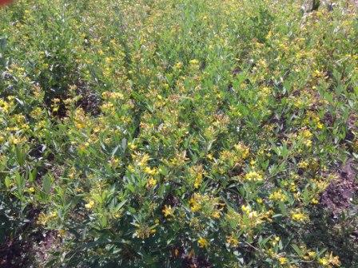
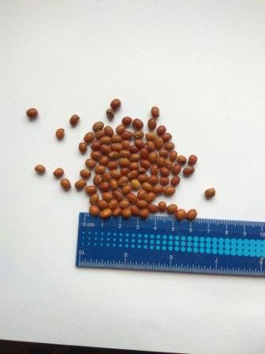
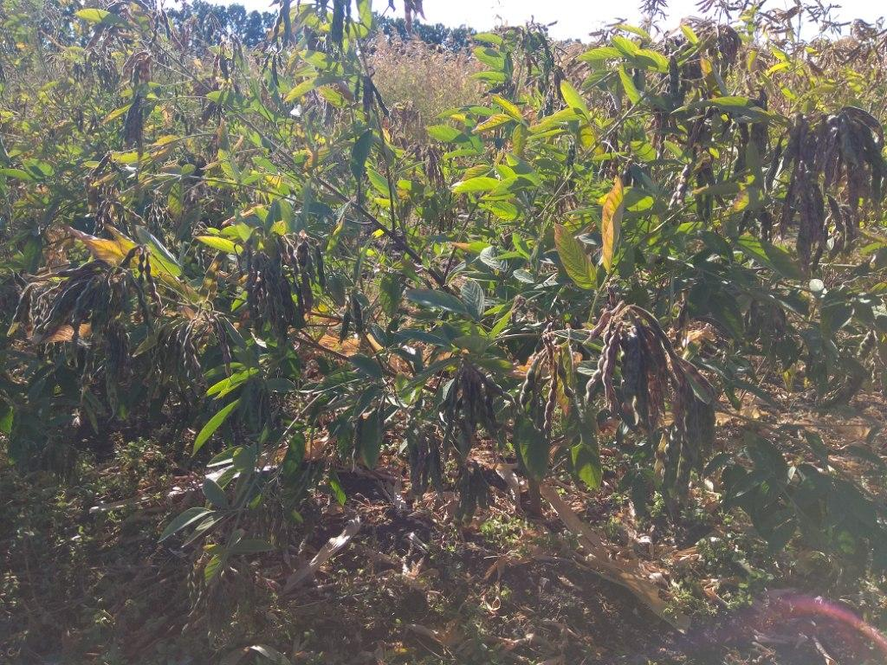

Каянус (голубиний горох)
Каянус (Cajanus cajan (L.) Mills.) ще називають голубиний горох - в сільському господарстві використовується досить давно. В Індії він уже культивується більш ніж 3,5 тис. років, там, вважається, він і був окультурений. В наш час каянус вирощується в багатьох країнах світу займаючи щорічно до 5 млн. га, в Азії, Африці та Південній Америці. Але основна кількість площ цієї культури (до 80%) знаходиться в Індії. Індія також є основним покупцем зерна каянусу на світовому ринку, адже власне вирощування не покриває потреб постійно зростаючого населення цієї країни. Зростає зацікавленість каянусом також і в європейських країнах та Америці, тут він часто використовується в дієтичному харчуванні, а також споживання там його збільшується завдяки постійному збільшенню переселенців із Індії та інших країн південно-східної Азії. Тому закупівельні ціни на зерно каянусу досить високі – одні з найвищих серед бобових культур.
Біологічні особливості
Щодо біологічних особливостей то каянус це однорічна або багаторічна рослина. В промисловому вирощуванні використовуються однорічні його різновидності, тоді як багаторічні види в основному вирощуються на присадибних ділянках в харчових та декоративних цілях. Рослини каянусу добре розвинені, в середньому до 1 м висотою у однорічних видів, і до 2 -3 м у багаторічних. Також вони мають добре розвинений стрижневий корінь який проникає в землю на глибину до 2 м і більше. Стебло внизу деревовидне, добре розгалужене, гілки відходять від нього під кутом. Листя чергові і трійчасті. Листочки довгасті і ланцетні, довжиною 5-10 см і 2-4 см шириною. Листя і стебла опушені, що в комбінації з розвиненою кореневою системою дає можливість ефективно протистояти засусі. Квіти згруповані в гроновидні суцвіття (від 5 до 10) на верхівках або пазухах гілок. Квітки метеликові і в основному жовтого кольору. Вони також можуть бути смугастими з фіолетовими смужками. Віночок близько 2-2,5 см. Плоди боби - плоскі, прямі і опушені, довжиною 5-9 см x 12-13 мм шириною. Біб містить 2-9 насінин, коричневого, червоного, білого або чорного кольору, малі, іноді з твердим покриттям (FAO, 2016a; Bekele-Tessema, 2007).
 |
Квітки голубиного гороху є досить привабливими для бджіл та інших комах. Тому незважаючи на те, що каянус як і інші бобові самозапильна рослина, проте перехресне запилення тут трапляється дуже часто до 40 %. Зважаючи на таку його особливість каянус є поки що єдиною зернобобовою культурою у якої вдалося створити гібридні сорти.
Мед з каянусу має зеленуватий відтінок і схожий на акацієвий. Зважаючи на те що цвітіння каянусу проходить в другій половині липня на початку серпня, коли більшість сояшнику уже відцвіла існує значна перспектива його використання для подовження періоду медозбору, особливо в південних областях України |
|
 |
Насіння різне за розміром в залежності від сорту маса 1000 насінин коливається від 50 до 150 г, забарвлення насіннєвої оболонки може бути білого, червогого, коричневого та ін кольорів |
Використання
Вирощується каянуc в основному заради насіння яке є їстівним. Проте він може також використовуватися і для багатьох інших цілей. Стебла Голубиного гороху є гарним джерелом палива, так як він досить швидко росте і розвиває добру зелену масу. Стебла і гілки голубиного гороху також використовуються для плетіння. Серед інших застосувань голубиного гороху випробування показали можливість використання в якості сировини для паперової маси. Cajanus cajan має численні застосування в годівлі тварин. Листя і стручки є цінним і висококалорійним білковим кормом. Листя іноді використовують для заміни люцерни в дієтах жуйних. Побічні продукти переробки насіння, а іноді і ціле насіння, використовуються як корм для тварин. Насінням можна годувати домашню птицю. Як уже згадувалося бджоли активно харчуються на голубиному горосі і виробляють мед з характерним кольором (зеленуватий). Голубиний горох також є хорошим господарем для лакових комах і шовкопрядів.
Поширення.
Регіоном походження голубиного гороху вважається Північно-Східна Африка або Індія. Його історія вирощування сягає щонайменше 3000 років В даний час він є пантропічним і субтропічним видом, особливо придатним для богарного землеробства в напів-пустельних регіонах через його глибокий стрижневий корінь, термічну толерантність і швидкий ріст. Сьогодні каянус можна знайти в обох півкулях від 30 ° С до 30 ° широт, і від рівня моря до висоти 2000 м (3000 м у Венесуелі). Зважаючи на те що він дуже жаростійкий каянус краще росте і розвивається в місцях, де температура коливається від 20 ° до 40 ° C. Незважаючи на чутливість до морозу, горох-голуб не припиняє ріст і розвиток при температурах, близьких до 0 ° C, а дорослі рослини можуть переносити навіть легкий мороз. Для отримання високий урожаїв краще, коли річна кількість опадів перевищує 625 мм, але він також дуже стійкий до посухи. Голубиний горох може рости на широкому діапазоні грунтів - від пісків до важких чорних глин, зі змінним pH. Однак найкращий діапазон рН знаходиться в межах 5-7. Він має низьку толерантність до засолення грунту, хоча, як повідомлялося, деякі сорти переносять високу (6-12 dS / м) солоність.
Світове виробництво голубиного гороху у 2014 році становило 4,85 млн. т. Основними виробниками були Індія (3,29 млн. Т, 65% світового виробництва), М'янма (0,57 млн. Т), Малаві (0,3 млн. Т), Кенія (0,28 млн. Т) і Танзанія (0,25 млн. Т). Більшість його вирощується в Азії (79,1%), далі йдуть Африка (17,6%) та Америка (2,5%) (FAO).
Вирощування каянусу в Україні.
Для дослідження можливості вирощування каянусу в Україні, а також особливостей його росту і розвитку в наших кліматичних умовах у 2017 р. з Міжнародного науково-дослідного інституту для напівпустельних тропіків (ICRISAT), що знаходиться в Індії, було отримано для дослідження 81 зразок генотипів голубиного гороху.
У 2017 р. було проведено розмноження отриманих сортозразків. А також була проведена первинна оцінка їх можливості рости і розвиватися в наших кліматичних умовах. Дослідження проводяться в Красноградському районі Харківської області. У 2017 р. середньорічна температура становила 9,7 °С, а за рік випало лише 444 мм опадів, з них в літній період випало лише 69,9 мм. За даних погодних умов рослини каянусу досить добре росли і розвивалися. Сівба була проведена 3 травня, як і квасолі в даному регіоні. В цей час була досить тепла погода сприятлива для росту і розвитку рослин, сходи були отримані 9 травня. Друга декада травня була значно прохолоднішою середньодобова температура була лише 11 °С, а в окремі дні температура на грунті опускалася до 1 °С, що в певній мірі затримало ріст і розвиток рослин голубиного гороху. Цвітіння у найбільш ранніх зразків почалося 28 червня - через 50 днів після появи сходів. Але більшість зразків зацвіла після 20 липня, у окремих зразків цвітіння почалося 9 вересня, а деякі не цвіли зовсім. Не зважаючи на посушливу погоду протягом літа рослини каянусу досить добре росли і розвивалися середня висота рослин становила 1,1 м, а окремі на 10 вересня сягали висоти людського росту до 1,8 м. Дозрівання більшості зразків настало у вересні.
За результатами попередньої оцінки для подальшого дослідження було залишено 49 зразків цвітіння яких починалося якомога раніше, і які дозрівали до кінця вересня.
У 2018 р. було проведено більш детальне дослідження залишених зразків каянусу щодо продуктивності та інших господарськи-цінних показників.
Середня річна температура цього року була 9,5 °С, кількість опадів за рік 551,5 мм, з них за літо 122 мм.
Сівбу цього року була проведена 29 квітня, сходи були отримані 12 травня. Погода на початку вегетації цього року була дещо теплішою сума активних температур на кінець першої декади липня становила 802 °С, проти 690,0 °С на цей період минулого року. Відповідно цвітіння більшості досліджуваних зразків каянусу цього року почалося майже на 10 днів раніше. Погода в цей період була вологою і теплою, за липень випало 80 мм опадів, що сприяло активному росту і розвитку рослин.
Зразок ID |
Урожай-ність ц/га |
Маса насіння з однієї рослини, г |
Висота рослин, см |
Mаса 1000 насінин, г |
Дата цвітіння |
Вегетаційний період, діб |
max |
min |
14924 |
27.5 |
30 |
12 |
90 |
85 |
16.07 |
123 |
14407 |
24,6 |
27,5 |
12,5 |
85 |
102 |
12.07 |
108 |
14394 |
23,9 |
23,5 |
8 |
80 |
90 |
11.07 |
108 |
14921 |
23,4 |
37 |
7,5 |
168 |
89 |
20.07 |
129 |
14895 |
23,1 |
37 |
7,5 |
80 |
103 |
16.07 |
116 |
14416 |
21,9 |
45,5 |
3 |
100 |
94 |
12.07 |
116 |
14923 |
21,3 |
21 |
12 |
90 |
83 |
15.07 |
109 |
Дозрівання у більшості зразків настало у середині вересня, таким чином вегетаційний період у них становив від 108 до 135 діб. Урожай коливався від 10 до 27 ц/га. Найбільш урожайним був зразок 14924 – 27,5 ц/га (табл.1), вегетаційний період у нього становив 123 дні, середня висота рослин 90 см, зерно крупне, маса 1000 насінин 85 г. Продуктивність окремих рослин досить сильно змінювалася, в окремих з них вона сягала до 35 г насіння, а в менш продуктивних вона становила лише 12 г насіння з рослини.
Слід також відмітити зразок 14407 з врожайністю 24,6 ц/га, який мав дуже крупне насіння, маса 1000 насінин 102 г, та вегетаційний період лише 108 днів, (дозрівання 28 серпня). Зразок 14921 також характеризується порівняно високою врожайністю 23,1 ц/га, а також має велику вегетативну масу, рослини висотою до 168 см, але вегетаційний період у нього становив 129 днів.
Насіння більшості досліджуваних зразків коричневого кольору різних відтінків, але були наявні також зразки з насінням білого кольору.
Таким чином за наявними даними вже можливо робити певні висновки. Голубиний горох (каянус) в наших кліматичних умовах досить добре росте і розвивається, показуючи урожайний потенціал не гірший ніж в регіонах його традиційного вирощування. Рослини каянусу прямостоячі і мають міцне стебло, а боби його не схильні до розтріскування тому він досить добре підходить для комбайнування. Тому дана рослина має перспективи для поширення, особливо в світлі зміни клімату в сторону більш жаркого і посушливого.
Місцяці |
декади |
Опади, мм |
Середня температура, °С |
Сума активних температур вище 10°С |
2017 р. |
2018 р. |
2017 р. |
2018 р. |
2017 р. |
2018 р. |
Квітень |
І |
5 |
4.9 |
10.1 |
9.7 |
9.0 |
11.0 |
ІІ |
37 |
7.0 |
6.5 |
12.7 |
9.0 |
39.0 |
ІІІ |
35.7 |
4.6 |
11.8 |
14.7 |
32.0 |
87.0 |
Травень |
І |
3.9 |
0.0 |
16.1 |
22.2 |
28.0 |
93.0 |
ІІ |
15 |
22.0 |
11.0 |
15.9 |
107.0 |
268.0 |
ІІІ |
1.4 |
0.0 |
17.7 |
19.2 |
192.0 |
369.0 |
Червень |
І |
12.5 |
5.1 |
18.7 |
17.6 |
279.0 |
446.0 |
ІІ |
2.2 |
13.3 |
18.9 |
22.5 |
369.0 |
571.0 |
ІІІ |
6 |
22.0 |
22.6 |
22.4 |
495.0 |
694.0 |
Липень |
І |
2.9 |
3.7 |
19.6 |
20.8 |
690.0 |
802.0 |
ІІ |
4 |
44.7 |
20.9 |
22.4 |
699.0 |
923.0 |
ІІІ |
32.3 |
33.7 |
23.6 |
24.1 |
849.0 |
1078.0 |
Серпень |
І |
0 |
0.0 |
26.2 |
23.2 |
1011.0 |
1210.0 |
ІІ |
4 |
0.0 |
26.6 |
23.8 |
1177.0 |
1348.0 |
ІІІ |
6 |
0.0 |
18.7 |
23.0 |
1274.0 |
1491.0 |
Вересень |
І |
23.0 |
15.5 |
17.4 |
22.2 |
1347.0 |
1613.0 |
ІІ |
0.1 |
4.8 |
20.9 |
18.8 |
1456.0 |
1701.0 |
ІІІ |
0.6 |
25.2 |
14.4 |
13.1 |
1507.0 |
1731.0 |

З додаткових питань пишіть olexiyku@gmail.com
або звоніть 098 293 92 64
|